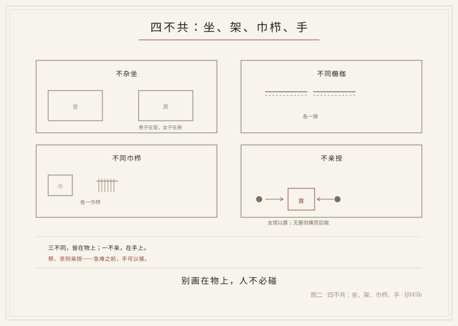

曲礼上 · 一·四十七 · 第 45 课
男女不混坐，不共用衣架，不共用巾栉，递东西不亲手相接。四件事都是「物」上的分，不是「人」上的绝。
说什么事：男女不杂坐，不同椸枷，不同巾栉，不亲授。
落在哪一层：教。上节讲二人之私，此节讲男女之别。
为何编在此位：一·四十六讲「不入二人之间」，此节讲「不共一物」；别先从器物上立，再落到言语与婚姻。
【经】男女不雜坐，不同椸枷，不同巾櫛，不親授。
不杂坐 郑注：「不杂坐，谓男子在堂，女子在房也。」——不是同席而不同位，是分处堂与房。
不同椸枷 郑注：「椸，可以枷衣者。」疏引字书：「椸，羊支反，衣架也。枷本又作架。」——各用各的衣架。
不同巾栉 栉，梳篦。巾栉是沐具，各用各的。
不亲授 疏：「男女有物，不亲相授也。」引《内则》：「非祭非丧，不相授器。其相授，则女授以篚。无篚，则皆坐奠之而后取之。」——授受要有中介：篚，或者放下再取。
男女不混坐，不共用衣架，不共用巾栉，递东西不亲手相接。
三「不同」加一「不亲」：坐、架、巾栉是常处之物，授受是一时之手。礼先在这些最日常的接触上划线，线画在物上，人手不必碰。
第一层 别在物上 郑注总一句「皆为重别，防淫乱」。重别者，把「别」看得很重；防淫乱者，所防是乱，不是防人。三件物：坐处、衣架、沐具——都是贴身的、天天用的，正因日常，才要先分。
第二层 男子在堂，女子在房 注只给这一句，把「不杂坐」解成两个空间，而不是两个座位。堂是待客、议事之处，房是起居之处；分处即不杂坐。
第三层 不亲授与篚 疏给的是可操作的法子：有篚则授以篚，无篚则「皆坐奠之而后取之」——放下，让对方自己取。手不必交，物仍可传。
第四层 祭丧为例外 《内则》「非祭非丧，不相授器」，反过来说：祭与丧，可以亲授。急难与大事之前，手可以接。
与今日何干 今日递物、同架、同席都无所谓，但「不亲手」的原意并非羞耻，而是「不使对方欠一个人情的手」。这一层今日仍可用：能放下的，别递到手里。
| 左 | 右 |
|---|---|
| 男女不杂坐 | 男子在堂，女子在房 |
| 不同椸枷 | 椸，可以枷衣者（衣架） |
| 不同巾栉 | 沐具各用 |
| 不亲授 | 女授以篚；无篚则奠而后取 |
| 非祭非丧，不相授器 | 祭丧可亲授 |
| 皆为重别，防淫乱 | 重别者，重其别，非绝其人 |
画堂与房之间的一道半开门：门外堂面铺席，席上两只相距很远的坐痕；门内房侧一只衣架、一只小几，几上一枚巾与一柄栉，各在一处。门下地上放着一只空篚。不画人，不写文字。赭色只在衣架横杆与篚沿。
